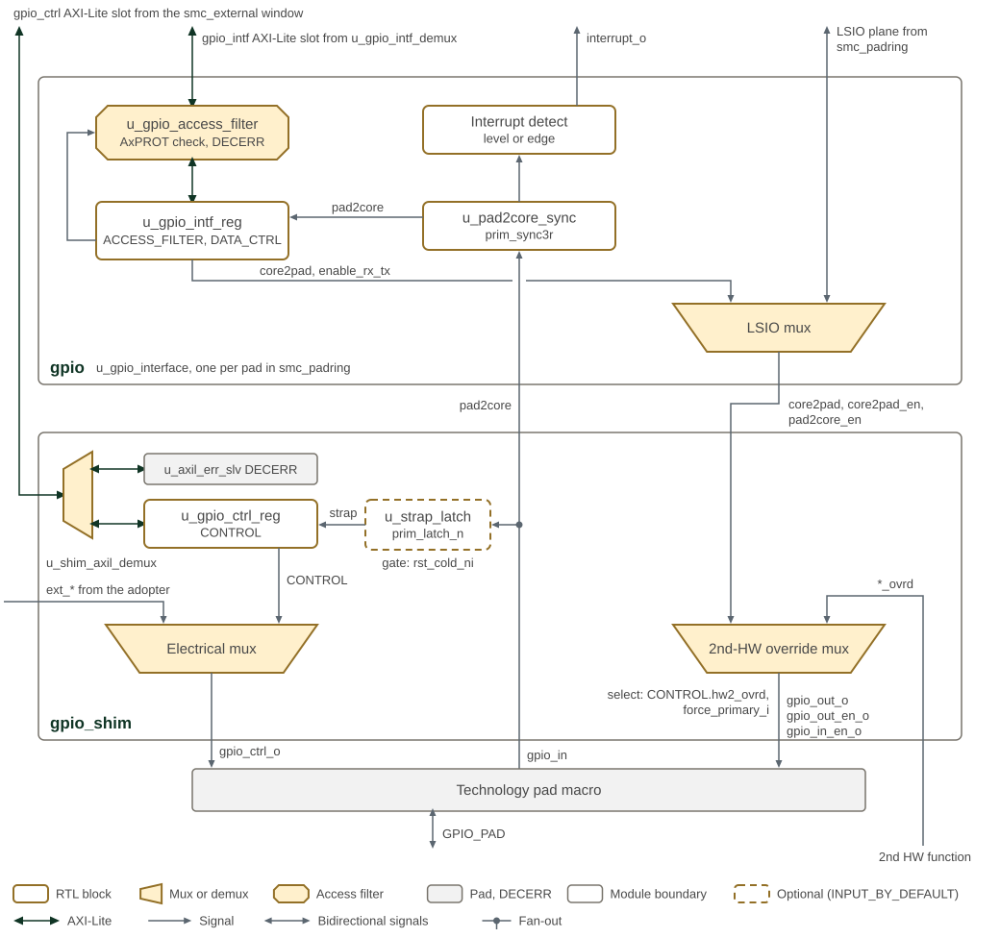
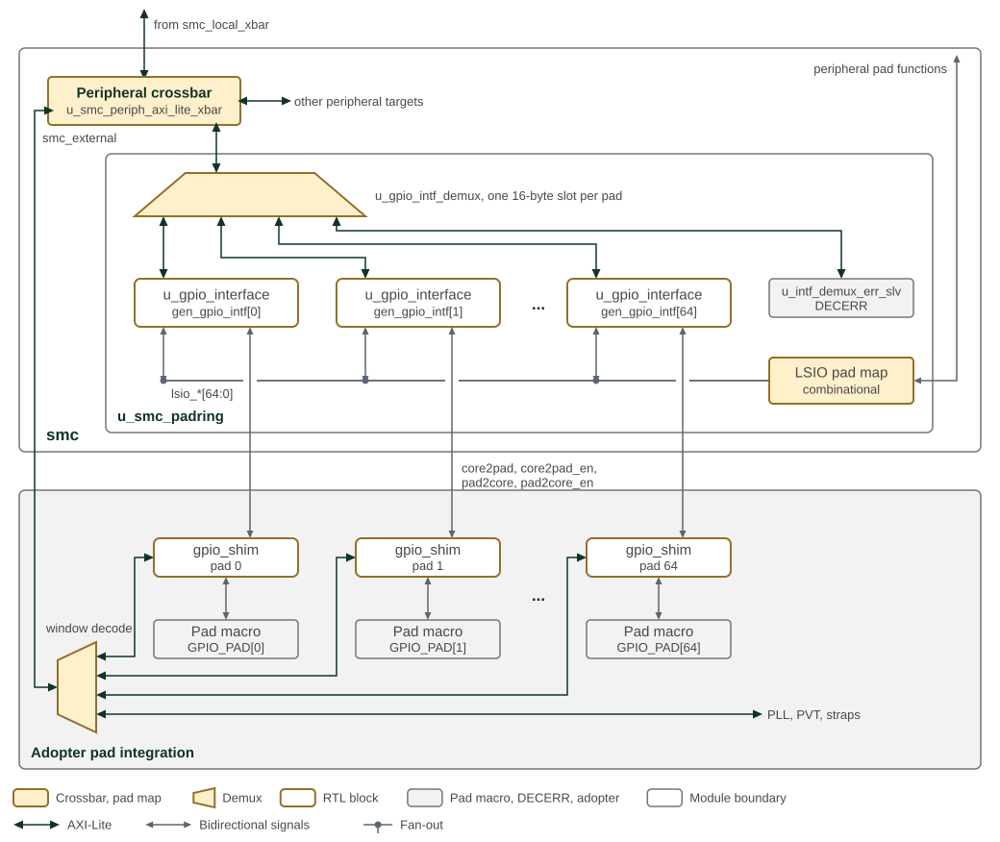

GPIO Peripheral
1. Overview
GPIO connects software and low-speed I/O (LSIO) peripherals to individual pads. Software can drive or sample a pad, select an interrupt trigger, and read its boot strap. Hardware LSIO requests take priority over software control unless software explicitly disables LSIO.
Each pad uses two blocks: gpio selects data and direction; gpio_shim
selects electrical settings and captures the strap. Each has its own
32-bit AXI4-Lite register interface. The surrounding padring instantiates
these blocks for its pads and supplies the address mapping and LSIO wiring.
The sections below explain ownership and reset behavior, list the interfaces and give the register maps. The GPIO section of the Programmer’s Guide gives the programming sequences.
2. Operation
GPIO controller, interface shim, LSIO mux and strap-capture path shows the two blocks that serve one pad: the gpio controller
in the SMC pad ring, and the gpio_shim that the adopter’s pad integration places in front
of the technology pad macro. Each block receives its own AXI-Lite register slot. In gpio,
the access filter takes its enables and requirements from the ACCESS_FILTER fields of
u_gpio_intf_reg (write_filter_enable, read_filter_enable, awprot_requirement and
arprot_requirement), the LSIO mux chooses the pad data and enables from the LSIO plane or
from DATA_CTRL, and the synchronized pad input feeds both the DATA_CTRL.pad2core
readback and the interrupt detector. In gpio_shim, the 2nd-HW override mux can replace
the primary plane with the *_ovrd_i inputs. While it does, it also returns the pad input
on pad2core_ovrd_o, which is low otherwise; pad2core_o carries the pad input in either
case. The electrical mux chooses the drive, pull and glitch-filter settings, and the strap
latch captures the pad input at the end of cold reset and presents it both as
CONTROL.strap_value and on the captured_strap_o output. Trapezoids are muxes and
demuxes, with their selectable ports on the wide side, so the pad input enters the 2nd-HW
override mux on its narrow side; the dashed strap latch is present only when
INPUT_BY_DEFAULT is set.

2.1. Data and Direction Ownership
After cold reset, the controller selects output data, transmit enable and receive enable independently. For each field, the first applicable row wins:
| Priority | Condition | Source |
|---|---|---|
1 |
|
Hardware LSIO data and direction inputs. |
2 |
|
|
3 |
|
Software-forced LSIO, using the same LSIO inputs. |
4 |
No preceding condition applies |
Output data 0, TX disabled, RX set by |
The per-field overrides are use_reg_core2pad, use_reg_tx and use_reg_rx.
They allow different sources for data and direction. A hardware LSIO request
outranks all three overrides; software-forced LSIO does not.
lsio_disable gates both forms of LSIO selection.
DATA_CTRL.lsio_enable reports the hardware request after the disable gate:
lsio_interface_select_i && !lsio_disable. It does not report a
software-forced selection and is not a general pad-owner indicator.
2.2. Input Readback
DATA_CTRL.pad2core returns the synchronized input when
interface_enable or use_reg_rx selects register readback; otherwise it
returns zero. The pad receiver must also be enabled by the selected owner.
The LSIO return path uses the unsynchronized pad input while either LSIO request is active. This return path is independent of the data/direction priority: a software LSIO request can enable readback even when registers own an output field. During cold reset, the LSIO return path also carries the pad input.
2.3. SMC Pad Ring
The SMC instantiates one gpio controller per pad in u_smc_padring, 65 in all.
SMC pad ring GPIO interfaces and adopter pad shims shows how the controllers are reached and where the shims sit.
u_smc_padring sits in u_smc_peripherals beside the peripheral crossbar
u_smc_periph_axi_lite_xbar, which receives the peripheral window from the local crossbar
u_smc_local_xbar in u_smc_base. The peripheral crossbar sends the GPIO interface
window to u_gpio_intf_demux, which
decodes one 16-byte slot per pad and answers any other address with DECERR. The LSIO pad
map assigns the SPI, UART, I3C, I2C, AVSBus, system-timer, isolate-request, boot-stall and
cool-reset functions to fixed pads, and drives the LSIO plane of each controller. The
controllers' pad wires leave the SMC; outside it, the adopter’s pad integration places a
gpio_shim and a pad macro on each pad, and decodes the smc_external window to give
each shim its gpio_ctrl slot; the rest of that window reaches adopter-specific targets.
The figure draws pads 0, 1 and 64; the ellipses stand for
the pads between them.

The open reference integration, smc_ip_integration, stands in for the adopter side
with one prim_pad_shim per pad at fixed electrical settings, and answers the gpio_ctrl
range of the smc_external window with DECERR.
2.4. Pad Settings and Secondary Function
The shim selects drive strength, pull settings and input conditioning in
this order: hardware LSIO request, CONTROL.config_enable, software-forced
LSIO, then parameter defaults. The LSIO requests use the same disable gate
as the controller. In register mode, CONTROL supplies drive_strength,
pull_enable_n0_scan, pull_select and schmitt_select.
A separate mux selects a secondary hardware function when
CONTROL.hw2_ovrd = 1 and force_primary_i = 0. It overrides the primary
data and direction path. force_primary_i restores the primary path
regardless of the register setting. The integrator must coordinate switching
with both hardware functions.
Electrical effects depend on the connected pad implementation. The supplied
gpio_model models output drive and receive enable; it does not model drive
strength, pull resistors or input conditioning. Do not interpret the
drive_strength encoding as a portable current rating.
2.5. Interrupts
The input passes through a three-stage synchronizer before interrupt
detection. The selected condition is registered on clk_i and gated by
DATA_CTRL.interrupt_enable at interrupt_o.
interrupt_type |
Condition | Output while enabled |
|---|---|---|
|
Input high |
Level follows the registered condition. |
|
Input low |
Level follows the registered condition. |
|
Rising edge |
One clock-cycle pulse per detected edge. |
|
Falling edge |
One clock-cycle pulse per detected edge. |
There is no sticky interrupt status or acknowledge register in this block. A level condition must cease, or the interrupt must be disabled, to remove the request. Edge pulses are not stretched; the receiving interrupt controller must capture them. Detection uses the synchronized input, independently of whether register readback is selected.
2.6. Reset and Strap Capture
rst_primary_ni asynchronously resets interface/control registers, the
input synchronizer and interrupt state. rst_cold_ni separately forces
controller outputs to data 0, TX disabled and RX=INPUT_BY_DEFAULT, and
forces the shim’s electrical settings to their parameter defaults.
The integration supplies reset timing; these modules do not synchronize
reset deassertion internally.
With INPUT_BY_DEFAULT = 1, the shim’s strap latch follows the pad while
cold reset is asserted and holds the level when cold reset is released.
This is a level-sensitive latch, not a sample taken on a clk_i edge.
With the parameter clear, the captured value is zero.
CONTROL.strap_value and captured_strap_o report that captured level.
CONTROL.strap_valid reflects INPUT_BY_DEFAULT; it is not a capture-done
flag. Read the strap after the system has released cold reset. Primary
reset alone does not recapture it.
2.7. Register Access Filtering
The interface-bank filter compares all three AXI PROT bits against the
configured read or write requirement. Each direction has its own enable.
A mismatch is sent to an error responder and completes with DECERR;
disabling a filter permits that direction regardless of PROT.
Filtering resets disabled. The stored read and write requirements reset to
3’b001 (secure, privileged data), but apply only when enabled. PROT
expresses transaction attributes, not initiator identity: this filter alone
does not establish SEP-only access. It protects the interface bank, not the
shim’s separate control bank. The
GPIO access filtering procedure
in the Programmer’s Guide gives the setup and readback requirements.
3. Interface
The GPIO peripheral provides bus interfaces for register access, LSIO integration for hardware protocols, and direct GPIO pad connections.
Each gpio instance drives one pad. The peripheral comprises 65 pads: 61 bonded and 4
unbonded.
The parameters and ports of gpio are listed in gpio.
3.1. LSIO Interface
The LSIO (Low Speed Input/Output) interface enables hardware-controlled GPIO operation for protocol processing.
3.2. LSIO Protocol Specifications
-
Selection Priority: an asserted
lsio_interface_select_ioverrides register-driven control, including DATA_CTRL.interface_enable and the DATA_CTRL_ENABLE.use_reg_* per-field overrides. The software force bit DATA_CTRL.lsio_select ranks the other way, below the register interface; DATA_CTRL.lsio_disable gates both -
Enable Logic: Active-low enables for both transmit and receive paths
-
Data Latency: Zero-cycle latency for data path when selected
-
Mode Switching: Immediate effect, no settling time required
-
Status Reflection: hardware LSIO request status available in DATA_CTRL.lsio_enable register. The field tracks the hardware request line gated by lsio_disable, so it reads 0 during a software-forced LSIO
3.3. GPIO Pad Interface
The GPIO pad interface provides direct connection to external pads with bidirectional capabilities.
3.4. Interrupt Interface
The interrupt interface provides event notification capabilities with configurable trigger modes.
The strap-capture output captured_strap_o is a port of gpio_shim, not of gpio; it
holds the pad value captured when the cold reset is released.
3.5. Interrupt Specifications
-
Polarity: Active high (asserted when high)
-
Duration: Level-sensitive, remains asserted based on configuration
-
Trigger Modes: Level (active-high/low) and edge (rising/falling) detection
-
Clearing: Automatic clearing based on trigger mode and pad state
-
Latency: Interrupt assertion within 2-3 clock cycles of triggering event
4. Memory Map and Register Reference
4.1. Memory Map
The controller’s interface bank contains DATA_CTRL, DATA_CTRL_ENABLE
and ACCESS_FILTER; the shim’s control bank contains CONTROL.
The generated gpio_intf and gpio_ctrl maps in
Detailed Register Map define their register offsets, and gpio_wrap
defines the bank placement within the composite aperture. The enclosing
padring determines their system addresses.
4.1.1. Reset Values
ACCESS_FILTER resets to 0x00010100: read and write filters are disabled,
with each stored protection requirement set to 3’b001. DATA_CTRL and
DATA_CTRL_ENABLE software controls reset to zero. Default pad direction
and post-reset LSIO ownership are described in Data and Direction Ownership and
Reset and Strap Capture; zeroed software controls do not imply that every
pad path is disabled.
CONTROL resets its drive-strength field to 3’b010 and its software
pull, conditioning, configuration-enable and secondary-override controls
to zero. The read-only strap fields reflect INPUT_BY_DEFAULT and the
captured input, so the complete value is not a single fixed reset word.
4.2. Detailed Register Map
GPIO Interface Address Map
GPIO interface configuration: pad/core routing, receive and transmit enables, and interrupt control.
Register List:
| Address | Name | Access | Description |
|---|---|---|---|
| 0x0 | DATA_CTRL | RW | - |
| 0x4 | DATA_CTRL_ENABLE | RW | - |
| 0x8 | ACCESS_FILTER | RW | GPIO Access Filter Register. WARNING: please read back this register to ensure the filter was written correctly. If you do not do so the filter may not update before your next transaction, causing unexpected behavior. |
Register Details:
DATA_CTRL
| Bits | Field | Access | Reset | Description |
|---|---|---|---|---|
| 31 | pad2core | R | 0x0 | PAD2SOC Value |
| 30:26 | Reserved | - | - | Reserved |
| 25 | lsio_enable | R | 0x0 | LSIO hardware request status. Set while lsio_interface_select_i is asserted and lsio_disable is clear. Because the hardware LSIO request outranks interface_enable, a set value also means the LSIO plane is driving this pad's data and direction. This field does not reflect a software-forced selection via lsio_select, which ranks below the register interface - it reads 0 in that case even when LSIO drives the pad. |
| 24:22 | Reserved | - | - | Reserved |
| 21:20 | interrupt_type | RW | 0x0 | Interrupt type - 0: active-high level, 1: active-low level, 2: rising edge, 3: falling edge |
| 19 | lsio_disable | RW | 0x0 | When set, LSIO accesses will be blocked from the GPIO interface |
| 18 | interrupt_enable | RW | 0x0 | Interrupt Enable. |
| 17 | lsio_select | RW | 0x0 | Force the LSIO interface to be used from software, when no hardware LSIO request is present on this pad. interface_enable has higher priority over this bit. This ranking applies to this software force bit only: the hardware lsio_interface_select_i input outranks interface_enable. Use lsio_disable to gate both. |
| 16 | interface_enable | RW | 0x0 | Register Interface Enable. Setting this chooses register values to drive the PAD. This includes core2pad, enable_rx_tx, and pad2core |
| 15:6 | Reserved | - | - | Reserved |
| 5:4 | enable_rx_tx | RW | 0x0 | Direction control. 2'b00: Neither RX nor TX enabled. 2'b01: TX enabled. 2'b10: RX enabled. 2'b11: Both enabled |
| 3:1 | Reserved | - | - | Reserved |
| 0 | core2pad | RW | 0x0 | Register-driven data to send to the pad. |
DATA_CTRL_ENABLE
| Bits | Field | Access | Reset | Description |
|---|---|---|---|---|
| 31:6 | Reserved | - | - | Reserved |
| 5 | use_reg_rx | RW | 0x0 | Per-field register override. When set, the RX direction (input enable) is taken from enable_rx_tx[1]. OR'd with interface_enable. |
| 4 | use_reg_tx | RW | 0x0 | Per-field register override. When set, the TX direction (output enable) is taken from enable_rx_tx[0]. OR'd with interface_enable. |
| 3:1 | Reserved | - | - | Reserved |
| 0 | use_reg_core2pad | RW | 0x0 | Per-field register override. When set, core2pad is register-driven. OR'd with interface_enable. |
ACCESS_FILTER
| Bits | Field | Access | Reset | Description |
|---|---|---|---|---|
| 31:19 | Reserved | - | - | Reserved |
| 18:16 | arprot_requirement | RW | 0x1 | When read_filter_enable is set, only allow read accesses with this prot value WARNING: please read back this register to ensure the filter was written correctly. If you do not do so the filter may not update before your next transaction, causing unexpected behavior. |
| 15:11 | Reserved | - | - | Reserved |
| 10:8 | awprot_requirement | RW | 0x1 | When write_filter_enable is set, only allow write accesses with this prot value WARNING: please read back this register to ensure the filter was written correctly. If you do not do so the filter may not update before your next transaction, causing unexpected behavior. |
| 7:2 | Reserved | - | - | Reserved |
| 1 | read_filter_enable | RW | 0x0 | Read Filter Enable. When set, reads require an exact match between AXI ARPROT and arprot_requirement. When clear, reads are unfiltered. PROT does not identify the initiator. WARNING: please read back this register to ensure the filter was written correctly. If you do not do so the filter may not update before your next transaction, causing unexpected behavior. |
| 0 | write_filter_enable | RW | 0x0 | Write Filter Enable. When set, writes require an exact match between AXI AWPROT and awprot_requirement. When clear, writes are unfiltered. PROT does not identify the initiator. WARNING: please read back this register to ensure the filter was written correctly. If you do not do so the filter may not update before your next transaction, causing unexpected behavior. |
GPIO Control Address Map
Per-pin GPIO pad control registers: drive strength, pull configuration, and strap capture.
Register List:
| Address | Name | Access | Description |
|---|---|---|---|
| 0x0 | CONTROL | RW | - |
Register Details:
CONTROL
| Bits | Field | Access | Reset | Description |
|---|---|---|---|---|
| 31:25 | Reserved | - | - | Reserved |
| 24 | hw2_ovrd | RW | 0x0 | Setting this register will enable the secondary HW function to override the GPIO enable and data lines. |
| 23:22 | Reserved | - | - | Reserved |
| 21 | strap_value | R | 0x0 | This register holds the captured value that was applied to the pad when reset was de-asserted. |
| 20 | strap_valid | R | 0x1 | When set, this bit indicates that the strap value is valid. This field is not set if the GPIO is not an input by default |
| 19:17 | Reserved | - | - | Reserved |
| 16 | config_enable | RW | 0x0 | Setting this choosing the register values for PAD settings. This includes pull_enable, pull_select, and schmitt_select |
| 15:11 | Reserved | - | - | Reserved |
| 10 | schmitt_select | RW | 0x0 | Register-driven schmitt select. |
| 9 | pull_select | RW | 0x0 | Register-driven pull select - by default we pull down |
| 8 | pull_enable_n0_scan | RW | 0x0 | Register-driven pull enable. Default is disabled |
| 7:3 | Reserved | - | - | Reserved |
| 2:0 | drive_strength | RW | 0x2 | Register-driven drive-strength. |
GPIO Wrapper Address Map
Top-level GPIO address map composing the interface and control register blocks.
Register List:
| Address | Name | Access | Description |
|---|---|---|---|
| 0x0 | DATA_CTRL | RW | - |
| 0x4 | DATA_CTRL_ENABLE | RW | - |
| 0x8 | ACCESS_FILTER | RW | GPIO Access Filter Register. WARNING: please read back this register to ensure the filter was written correctly. If you do not do so the filter may not update before your next transaction, causing unexpected behavior. |
| 0x10 | CONTROL | RW | - |
Register Details:
DATA_CTRL
| Bits | Field | Access | Reset | Description |
|---|---|---|---|---|
| 31 | pad2core | R | 0x0 | PAD2SOC Value |
| 30:26 | Reserved | - | - | Reserved |
| 25 | lsio_enable | R | 0x0 | LSIO hardware request status. Set while lsio_interface_select_i is asserted and lsio_disable is clear. Because the hardware LSIO request outranks interface_enable, a set value also means the LSIO plane is driving this pad's data and direction. This field does not reflect a software-forced selection via lsio_select, which ranks below the register interface - it reads 0 in that case even when LSIO drives the pad. |
| 24:22 | Reserved | - | - | Reserved |
| 21:20 | interrupt_type | RW | 0x0 | Interrupt type - 0: active-high level, 1: active-low level, 2: rising edge, 3: falling edge |
| 19 | lsio_disable | RW | 0x0 | When set, LSIO accesses will be blocked from the GPIO interface |
| 18 | interrupt_enable | RW | 0x0 | Interrupt Enable. |
| 17 | lsio_select | RW | 0x0 | Force the LSIO interface to be used from software, when no hardware LSIO request is present on this pad. interface_enable has higher priority over this bit. This ranking applies to this software force bit only: the hardware lsio_interface_select_i input outranks interface_enable. Use lsio_disable to gate both. |
| 16 | interface_enable | RW | 0x0 | Register Interface Enable. Setting this chooses register values to drive the PAD. This includes core2pad, enable_rx_tx, and pad2core |
| 15:6 | Reserved | - | - | Reserved |
| 5:4 | enable_rx_tx | RW | 0x0 | Direction control. 2'b00: Neither RX nor TX enabled. 2'b01: TX enabled. 2'b10: RX enabled. 2'b11: Both enabled |
| 3:1 | Reserved | - | - | Reserved |
| 0 | core2pad | RW | 0x0 | Register-driven data to send to the pad. |
DATA_CTRL_ENABLE
| Bits | Field | Access | Reset | Description |
|---|---|---|---|---|
| 31:6 | Reserved | - | - | Reserved |
| 5 | use_reg_rx | RW | 0x0 | Per-field register override. When set, the RX direction (input enable) is taken from enable_rx_tx[1]. OR'd with interface_enable. |
| 4 | use_reg_tx | RW | 0x0 | Per-field register override. When set, the TX direction (output enable) is taken from enable_rx_tx[0]. OR'd with interface_enable. |
| 3:1 | Reserved | - | - | Reserved |
| 0 | use_reg_core2pad | RW | 0x0 | Per-field register override. When set, core2pad is register-driven. OR'd with interface_enable. |
ACCESS_FILTER
| Bits | Field | Access | Reset | Description |
|---|---|---|---|---|
| 31:19 | Reserved | - | - | Reserved |
| 18:16 | arprot_requirement | RW | 0x1 | When read_filter_enable is set, only allow read accesses with this prot value WARNING: please read back this register to ensure the filter was written correctly. If you do not do so the filter may not update before your next transaction, causing unexpected behavior. |
| 15:11 | Reserved | - | - | Reserved |
| 10:8 | awprot_requirement | RW | 0x1 | When write_filter_enable is set, only allow write accesses with this prot value WARNING: please read back this register to ensure the filter was written correctly. If you do not do so the filter may not update before your next transaction, causing unexpected behavior. |
| 7:2 | Reserved | - | - | Reserved |
| 1 | read_filter_enable | RW | 0x0 | Read Filter Enable. When set, reads require an exact match between AXI ARPROT and arprot_requirement. When clear, reads are unfiltered. PROT does not identify the initiator. WARNING: please read back this register to ensure the filter was written correctly. If you do not do so the filter may not update before your next transaction, causing unexpected behavior. |
| 0 | write_filter_enable | RW | 0x0 | Write Filter Enable. When set, writes require an exact match between AXI AWPROT and awprot_requirement. When clear, writes are unfiltered. PROT does not identify the initiator. WARNING: please read back this register to ensure the filter was written correctly. If you do not do so the filter may not update before your next transaction, causing unexpected behavior. |
CONTROL
| Bits | Field | Access | Reset | Description |
|---|---|---|---|---|
| 31:25 | Reserved | - | - | Reserved |
| 24 | hw2_ovrd | RW | 0x0 | Setting this register will enable the secondary HW function to override the GPIO enable and data lines. |
| 23:22 | Reserved | - | - | Reserved |
| 21 | strap_value | R | 0x0 | This register holds the captured value that was applied to the pad when reset was de-asserted. |
| 20 | strap_valid | R | 0x1 | When set, this bit indicates that the strap value is valid. This field is not set if the GPIO is not an input by default |
| 19:17 | Reserved | - | - | Reserved |
| 16 | config_enable | RW | 0x0 | Setting this choosing the register values for PAD settings. This includes pull_enable, pull_select, and schmitt_select |
| 15:11 | Reserved | - | - | Reserved |
| 10 | schmitt_select | RW | 0x0 | Register-driven schmitt select. |
| 9 | pull_select | RW | 0x0 | Register-driven pull select - by default we pull down |
| 8 | pull_enable_n0_scan | RW | 0x0 | Register-driven pull enable. Default is disabled |
| 7:3 | Reserved | - | - | Reserved |
| 2:0 | drive_strength | RW | 0x2 | Register-driven drive-strength. |